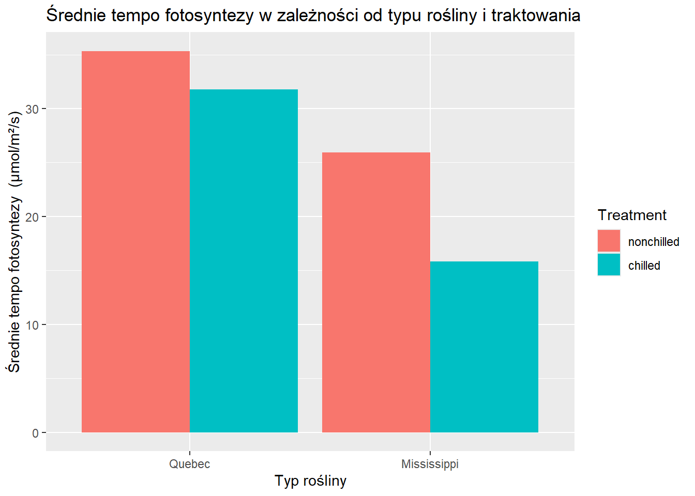
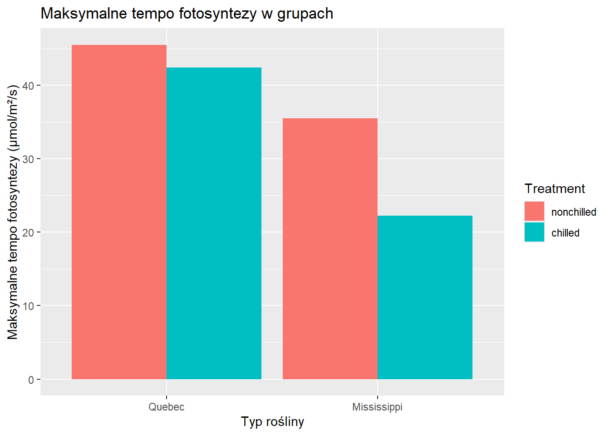
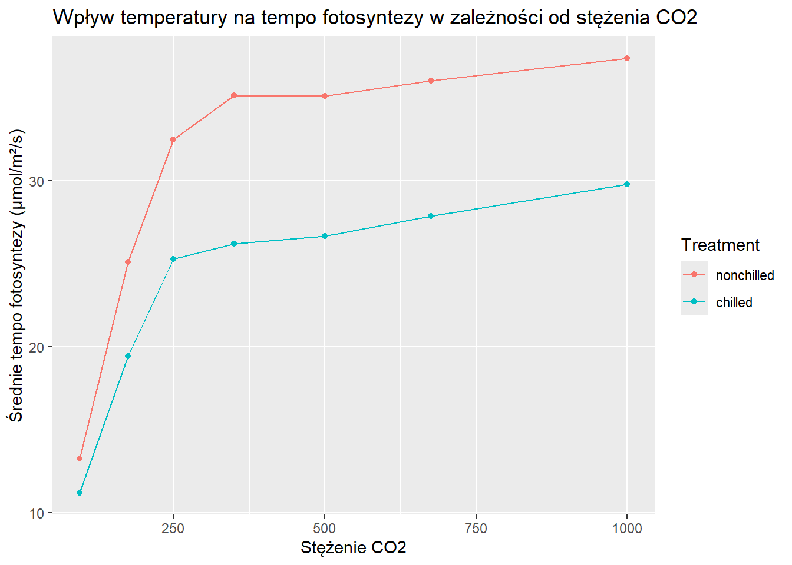
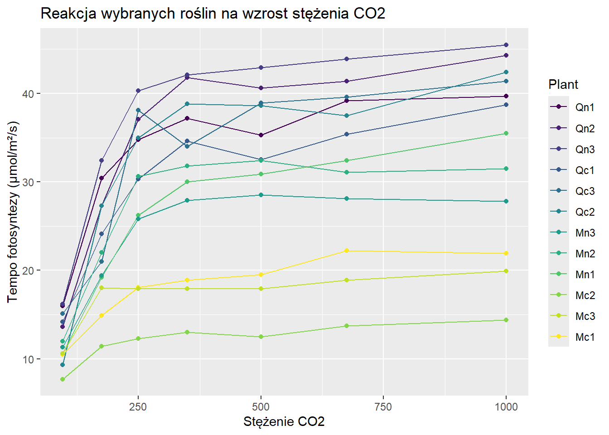
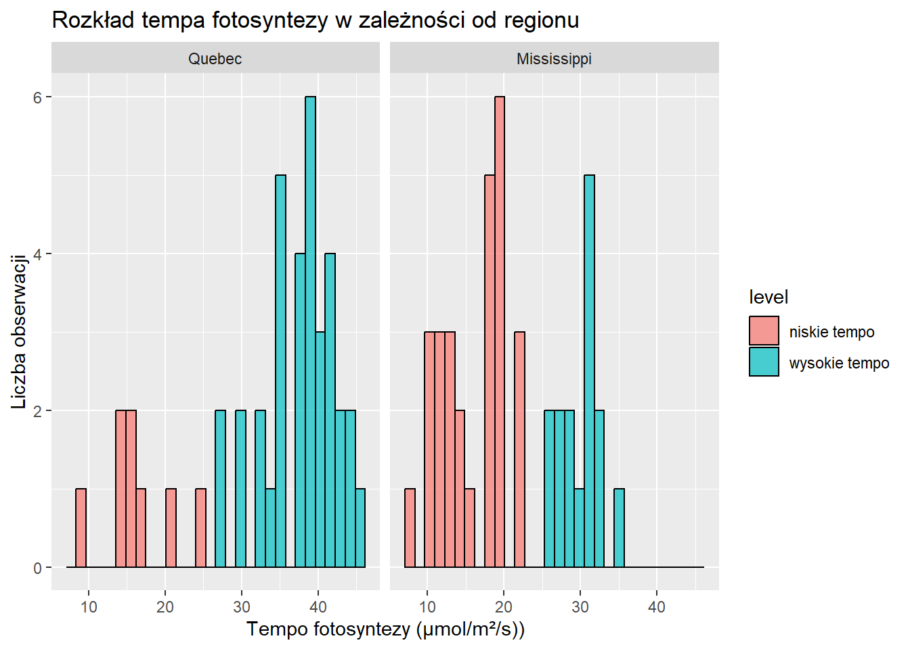

Last updated: 2026-01-17
Checks: 6 1
Knit directory: strona_projekt/
This reproducible R Markdown analysis was created with workflowr (version 1.7.2). The Checks tab describes the reproducibility checks that were applied when the results were created. The Past versions tab lists the development history.
The R Markdown file has unstaged changes. To know which version of
the R Markdown file created these results, you’ll want to first commit
it to the Git repo. If you’re still working on the analysis, you can
ignore this warning. When you’re finished, you can run
wflow_publish to commit the R Markdown file and build the
HTML.
Great job! The global environment was empty. Objects defined in the global environment can affect the analysis in your R Markdown file in unknown ways. For reproduciblity it’s best to always run the code in an empty environment.
The command set.seed(20260111) was run prior to running
the code in the R Markdown file. Setting a seed ensures that any results
that rely on randomness, e.g. subsampling or permutations, are
reproducible.
Great job! Recording the operating system, R version, and package versions is critical for reproducibility.
Nice! There were no cached chunks for this analysis, so you can be confident that you successfully produced the results during this run.
Great job! Using relative paths to the files within your workflowr project makes it easier to run your code on other machines.
Great! You are using Git for version control. Tracking code development and connecting the code version to the results is critical for reproducibility.
The results in this page were generated with repository version 224864f. See the Past versions tab to see a history of the changes made to the R Markdown and HTML files.
Note that you need to be careful to ensure that all relevant files for
the analysis have been committed to Git prior to generating the results
(you can use wflow_publish or
wflow_git_commit). workflowr only checks the R Markdown
file, but you know if there are other scripts or data files that it
depends on. Below is the status of the Git repository when the results
were generated:
Ignored files:
Ignored: .Rhistory
Ignored: .Rproj.user/
Ignored: analysis/prezentacja.html
Untracked files:
Untracked: analysis/cvvv.Rmd
Unstaged changes:
Deleted: Nowy Archiwum WinRARa (ZIP).zip
Modified: analysis/CV.Rmd
Modified: analysis/_site.yml
Deleted: analysis/about.Rmd
Modified: analysis/analiza_danych.Rmd
Modified: analysis/index.Rmd
Deleted: analysis/license.Rmd
Note that any generated files, e.g. HTML, png, CSS, etc., are not included in this status report because it is ok for generated content to have uncommitted changes.
These are the previous versions of the repository in which changes were
made to the R Markdown (analysis/analiza_danych.Rmd) and
HTML (docs/analiza_danych.html) files. If you’ve configured
a remote Git repository (see ?wflow_git_remote), click on
the hyperlinks in the table below to view the files as they were in that
past version.
| File | Version | Author | Date | Message |
|---|---|---|---|---|
| html | 3038b37 | KUI3A | 2026-01-17 | Build site. |
| Rmd | 58f5a4b | KUI3A | 2026-01-17 | wflow_publish("analysis") |
Analiza Danych w R
Opis
Zbiór danych CO2 zawiera 84 obserwacje i 5 zmiennych pochodzących z
eksperymentu badającego odporność na niską temperaturę trawy z gatunku
Echinochloa crus-galli
Format danych
Obiekt jest ramką danych zawierającą następujące kolumny:
Plant – uporządkowany czynnik identyfikujący każdą
roślinę
Type – pochodzenie rośliny: Quebec lub
Mississippi
Treatment – sposób traktowania
rośliny:
-nonchilled – niechłodzona
-chilled – schłodzona,
conc –
stężenie dwutlenku węgla w otoczeniu (ml/l)
uptake
– tempo pobierania CO₂ (μmol/m²/s)
Szczegóły
eksperymentu Tempo pobierania CO₂ zmierzono dla sześciu roślin
pochodzących z Quebecu oraz sześciu z Mississippi przy różnych poziomach
stężenia CO₂ w powietrzu.
Połowa roślin z każdej grupy została schłodzona przez noc przed przeprowadzeniem eksperymentu, aby sprawdzić wpływ temperatury na proces fotosyntezy.
Zbiór danych był pierwotnie częścią pakietu nlme, który udostępnia
dodatkowe metody obsługi danych pogrupowanych.
Źródło danych
Potvin, C., Lechowicz, M. J., Tardif, S. (1990) The statistical analysis of ecophysiological response curves obtained from experiments involving repeated measures, Ecology, 71, 1389–1400.
Pinheiro, J. C., Bates, D. M. (2000) Mixed-effects Models in S and
S-PLUS, Springer.
library(dplyr)
library(ggplot2)
co2_1=CO2 %>%
group_by(Type,Treatment) %>%
summarise(mean= mean(uptake))
ggplot(co2_1, aes(x=Type, y= mean, fill=Treatment)) +
geom_col(position = "dodge") +
labs(
title = "Średnie tempo fotosyntezy w zależności od typu rośliny i traktowania",
x="Typ rośliny",
y="Średnie tempo fotosyntezy (μmol/m²/s)"
)
| Version | Author | Date |
|---|---|---|
| 3038b37 | KUI3A | 2026-01-17 |
Interpretacja
Rośliny nieschłodzone
osiągają wyższe średnie tempo fotosyntezy niż rośliny schłodzone- w
niższej temperaturze fotosynteza zachodzi wolniej, w wyższej
szybciej
co2_max= CO2 %>%
group_by(Type, Treatment) %>%
summarise(max=max(uptake))
ggplot(co2_max, aes(x=Type, y=max, fill=Treatment)) +
geom_col(position = "dodge") +
labs(
title="Maksymalne tempo fotosyntezy w grupach",
x="Typ rośliny",
y="Maksymalne tempo fotosyntezy (μmol/m²/s)"
)
| Version | Author | Date |
|---|---|---|
| 3038b37 | KUI3A | 2026-01-17 |
Interpretacja
Rośliny nieschłodzone
osiągają wyższe maksymalne tempo fotosyntezy niż rośliny schłodzone-
niska temperatura ogranicza tempo fotosyntezy
library(dplyr)
library(ggplot2)
co2_temp= CO2 %>%
group_by(conc, Treatment) %>%
summarise(mean_uptake = mean(uptake))
ggplot(co2_temp, aes(x=conc, y=mean_uptake, color= Treatment)) +
geom_line() +
geom_point() +
labs(
title="Wpływ temperatury na tempo fotosyntezy w zależności od stężenia CO2",
x="Stężenie CO2",
y="Średnie tempo fotosyntezy (μmol/m²/s)",
)
| Version | Author | Date |
|---|---|---|
| 3038b37 | KUI3A | 2026-01-17 |
Interpretacja
Na wykresie widać, że dla
większości poziomów stężenia CO2 rośliny nieschłodzone osiągają wyższe
średnie tempo fotosyntezy niż rośliny schłodzone. Oznacza to że obniżona
temperatura ogranicza intensywność fotosyntezy
library(dplyr)
library(ggplot2)
co2_plants= CO2 %>%
filter(Plant== "Qn1" | Plant== "Qn2" | Plant== "Qn3" | Plant== "Mn1" | Plant== "Mn2" | Plant== "Mn3"|
Plant== "Qc1" | Plant== "Qc2" | Plant== "Qc3" | Plant== "Mc1" | Plant== "Mc2" | Plant== "Mc3")
ggplot(co2_plants, aes(x= conc, y= uptake, color=Plant)) +
geom_line() +
geom_point() +
labs(
title= "Reakcja wybranych roślin na wzrost stężenia CO2",
x= "Stężenie CO2",
y= "Tempo fotosyntezy (μmol/m²/s)",
)
| Version | Author | Date |
|---|---|---|
| 3038b37 | KUI3A | 2026-01-17 |
Interpretacja
Wzrost stężenia CO2
powoduje zwiększenie tempa fotosyntezy u wszystkich roślin, jednak
reakcja różni się między poszczególnymi roślinami
library(dplyr)
library(ggplot2)
co2_region = CO2 %>%
mutate(level = ifelse(uptake < 25, "niskie tempo", "wysokie tempo"))
ggplot(co2_region, aes(x= uptake, fill= level)) +
geom_histogram(color = "black", alpha = 0.7) +
facet_wrap(~ Type) +
labs(
title= "Rozkład tempa fotosyntezy w zależności od regionu",
x= "Tempo fotosyntezy (μmol/m²/s))",
y= "Liczba obserwacji",
)
| Version | Author | Date |
|---|---|---|
| 3038b37 | KUI3A | 2026-01-17 |
Interpretacja
tempo fotosyntezy różni
się między regionami. w Quebec występują wyższe wartości uptake niz w
Mississippi. Pochodzenie roślin wpływa na intensywność fotosyntezy.
sessionInfo()R version 4.5.2 (2025-10-31 ucrt)
Platform: x86_64-w64-mingw32/x64
Running under: Windows 10 x64 (build 19045)
Matrix products: default
LAPACK version 3.12.1
locale:
[1] LC_COLLATE=Polish_Poland.utf8 LC_CTYPE=Polish_Poland.utf8
[3] LC_MONETARY=Polish_Poland.utf8 LC_NUMERIC=C
[5] LC_TIME=Polish_Poland.utf8
time zone: Europe/Warsaw
tzcode source: internal
attached base packages:
[1] stats graphics grDevices utils datasets methods base
other attached packages:
[1] ggplot2_4.0.1 dplyr_1.1.4 workflowr_1.7.2
loaded via a namespace (and not attached):
[1] gtable_0.3.6 jsonlite_2.0.0 compiler_4.5.2 promises_1.5.0
[5] tidyselect_1.2.1 Rcpp_1.1.0 stringr_1.6.0 git2r_0.36.2
[9] callr_3.7.6 later_1.4.4 jquerylib_0.1.4 scales_1.4.0
[13] yaml_2.3.12 fastmap_1.2.0 R6_2.6.1 labeling_0.4.3
[17] generics_0.1.4 knitr_1.51 tibble_3.3.1 rprojroot_2.1.1
[21] RColorBrewer_1.1-3 bslib_0.9.0 pillar_1.11.1 rlang_1.1.6
[25] cachem_1.1.0 stringi_1.8.7 httpuv_1.6.16 xfun_0.55
[29] S7_0.2.1 getPass_0.2-4 fs_1.6.6 sass_0.4.10
[33] otel_0.2.0 viridisLite_0.4.2 cli_3.6.5 withr_3.0.2
[37] magrittr_2.0.4 ps_1.9.1 grid_4.5.2 digest_0.6.39
[41] processx_3.8.6 rstudioapi_0.17.1 lifecycle_1.0.5 vctrs_0.6.5
[45] evaluate_1.0.5 glue_1.8.0 farver_2.1.2 whisker_0.4.1
[49] rmarkdown_2.30 httr_1.4.7 tools_4.5.2 pkgconfig_2.0.3
[53] htmltools_0.5.9